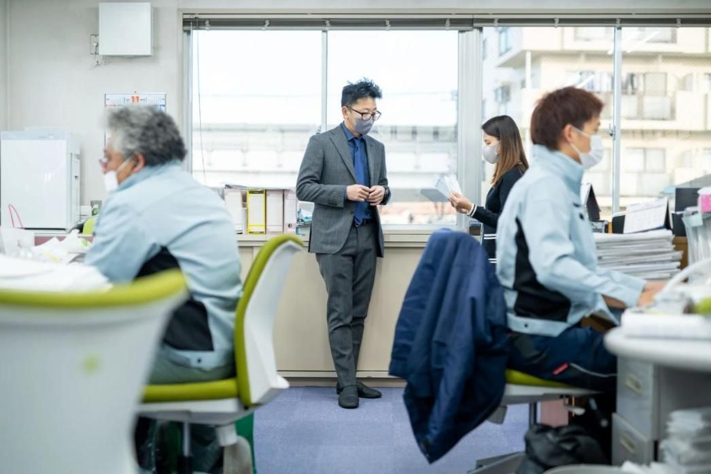

INFRASTRUCTURE / KURUME KOGYO
道路の復旧舗装から、
水道・土木工事まで。
世田谷を拠点に、ガス管取替後の復旧舗装工事をはじめ、水道・一般土木・下水道工事に携わる株式会社久留米興業。道路と街のインフラに関わる施工領域をご紹介します。
- 設立
- 1974年
- 本社
- 東京都世田谷区
- 対応工事
- 4分類

対応工事
- 01ガス管取替後の復旧舗装工事
- 02水道工事
- 03一般土木工事
- 04下水道工事
02SINCE 1974会社概要
1974年から、
現場と地域に向き合う。
久留米興業は1974年設立。道路や水道に関わる工事を通じ、地域の暮らしを支えてきました。現在の会社の姿と、取り組んできた事業を知っていただけるページです。
会社の概要を見る
- 設立
- 1974年3月4日
- 所在地
- 東京都世田谷区北烏山6丁目26-28
- 主な事業
- 復旧舗装・水道・一般土木・下水道
- 関連会社
- KRM株式会社
03OUR WORK事業内容
対応する工事を、明確に。
ガス管取替後の道路復旧から、水道・土木・下水道工事まで。主な事業領域を整理しました。発注内容に近い分野から詳しい情報をご覧ください。
| No. | 工種 | 内容 | 写真 |
|---|---|---|---|
| 01 | ガス管取替後の復旧舗装工事 | ガス管の取替後に行う道路の舗装復旧工事。 |  |
| 02 | 水道工事 | 水道管の布設・布設替など、給水インフラに関わる工事。 |  |
| 03 | 一般土木工事 | 道路の改良・維持など、公共空間の基盤に関わる土木工事。 |  |
| 04 | 下水道工事 | 下水道の整備など、生活環境を支える工事。 | 写真準備中 |
下水道工事と確認できる写真が届くまで、写真欄は「写真準備中」にしています。未確認の対応範囲・資格・実績数は載せていません。
04COORDINATION仕事の進め方
施工の先にある、
信頼まで。
工事は、取引先・現場・協力会社・地域の方々との連携によって進みます。担当する仕事の内容だけでなく、現場を円滑に進めるための関係づくりも大切にしています。
- CLIENT
取引先・発注者
工事の内容や場所、時期などのご相談を受けて、仕事が始まります。
- COORDINATION
営業・調整
現地の確認、見積、人や材料・日程の段取りを整え、現場とつなぎます。
- CONSTRUCTION
現場・施工
安全を確かめながら班で役割を分け、近隣にも配慮して施工を進めます。
仕事の進め方を説明するための図です。工事ごとの詳しい流れは事業内容のページでご案内しています。
05PROJECT SCENES施工の様子
現場を、写真で確かめる。
施工内容を検討する際には、言葉だけでなく実際の現場の様子も大切な判断材料です。久留米興業の仕事を、確認できた写真とともにご紹介します。



06OUR TEAMWORK働き方
施工を支えるのは、
人と段取り。
現場で施工する人、取引先と現場をつなぐ人。それぞれの役割や働き方を紹介しています。仕事の進め方を知ることは、会社を理解することにもつながります。
労働環境を見る

07OUR MEMBERS働くメンバー
現場と事務所、
役割は違っても。
工事は一人では完成しません。営業、現場、管理を担う人たちのそれぞれの視点から、久留米興業で働く実像をご紹介します。
働くメンバーを知る08CAREERS採用情報
次のインフラを支える仲間へ。
営業職と現場職、それぞれの仕事には異なる専門性があります。入社後の流れ、評価、働く環境、募集条件は採用情報ページで詳しく紹介しています。
10GET IN TOUCHお問い合わせ
工事のご相談から、
会社のことまで。
事業内容や会社概要をご覧いただき、工事に関するお問い合わせは正式な窓口へ。久留米興業で働くことに関心のある方には、採用情報もご案内しています。